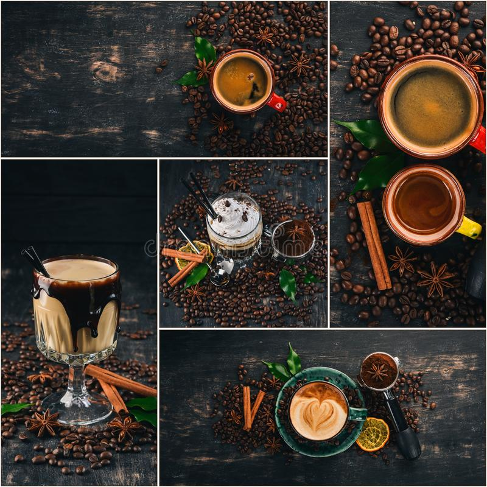

Sobre Nosotros
este blog ha sido creado para enseñar a preparar diferentes tipos de café de manera gratuita ya que es una iniciativa para promover el consumo de cafés de calidad y difundir la cultura cafetera nacional, tradicional de nuestra linda tierra colombia
El café es para compartir. Firmemente creemos que la cultura cafeína es algo que todos podemos disfrutar a su manera. ¿Cuál es la mejor taza de café? La que a ti te gusta. Por eso, nuestra visión es crecer una comunidad apasionada por el café, con personas con distintos gustos y niveles de conocimiento del tema.